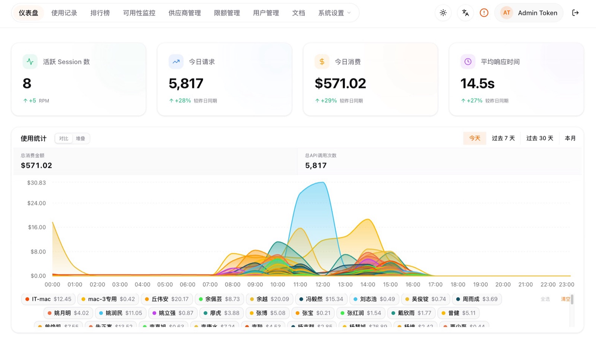
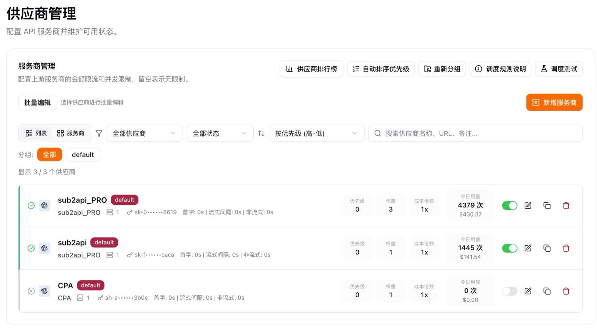
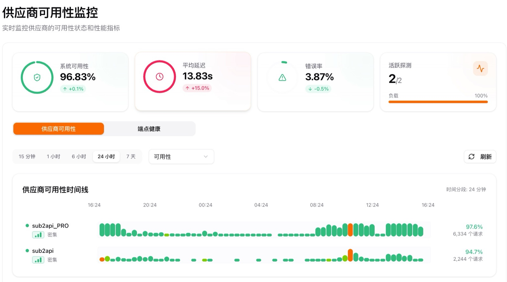
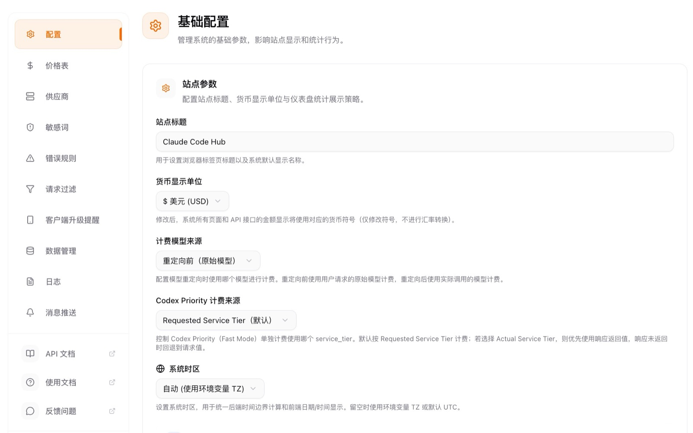

已部署内部平台
API 管理平台
API 管理平台是软件部已部署的内部 API 资源管理入口，用于集中展示账号资源、API 访问、供应商配置、调用统计和使用情况。公司内部同事可通过内网地址直接访问平台，了解当前 API 能力的使用状态和治理情况。
展示 API 账号、访问凭证、供应商和可用状态，帮助管理员了解当前资源是否可用、是否需要维护。
展示请求量、调用趋势、失败情况和响应状态，帮助负责人判断 API 使用热度和稳定性。
展示不同账号、供应商或模型的使用情况，支撑后续额度分配、异常排查和资源优化。
适用对象
平台面向公司内部使用，不要求普通同事自行部署。不同角色可以根据关注点查看对应数据和功能入口。
| 使用对象 | 可以查看什么 | 使用价值 |
|---|---|---|
| 软件部管理员 | 账号、供应商、Token、配置状态 | 统一维护 API 资源 |
| AI 应用负责人 | 调用量、失败率、使用趋势 | 评估应用运行情况 |
| 开发同事 | API 地址、接入状态、异常信息 | 支撑问题定位和能力接入 |
| 管理/运营同事 | 使用统计、趋势数据、资源分布 | 了解 AI 能力使用情况 |
功能展示
统一查看账号资源、账号状态、归属关系和可用范围，支撑后续权限治理。
查看不同供应商或模型资源，判断当前 API 能力是否可用，辅助后续接入和维护。
查看请求量、调用趋势、失败情况和响应变化，支撑平台运行分析和资源评估。
查看异常请求和使用波动，辅助定位 API 不可用、调用失败或响应慢等问题。
平台截图
从总览到运维，快速了解平台实际界面




访问与使用
公司内网访问：API 管理平台。该地址面向公司内部网络环境使用。
在公司内网环境下打开平台地址，进入 API 管理平台页面。
先查看账号资源、供应商状态和总体调用情况，判断平台整体运行情况。
管理员查看账号和供应商，负责人查看统计和趋势，开发同事查看接入和异常信息。
如果发现账号不可用、调用异常或统计不准确，可联系软件部 AI 对接人确认。
常见问题
| 问题 | 说明 |
|---|---|
| 无法访问平台 | 请确认是否处于公司内网环境，访问地址是否正确。 |
| 不知道应该看哪个模块 | 管理员优先查看账号和供应商，负责人优先查看统计和趋势。 |
| 数据和预期不一致 | 先确认统计时间范围、账号归属和调用来源。 |
| 需要新增 API 或账号 | 联系软件部 AI 对接人进行需求确认。 |
建设说明
本平台参考开源项目 ding113/claude-code-hub 搭建，并结合公司内部 API 资源管理场景进行部署和使用。普通使用者无需关注部署过程，如需了解建设来源，可查看开源项目。
| 技术组件 | 说明 |
|---|---|
| Next.js 15 / Hono | 用于平台前后端能力组织。 |
| PostgreSQL / Redis | 用于数据存储、缓存和运行支撑。 |
| Docker Compose | 用于内部部署和服务编排。 |